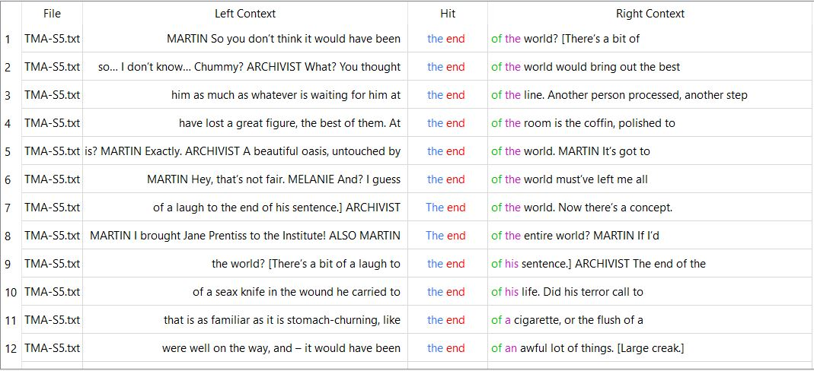
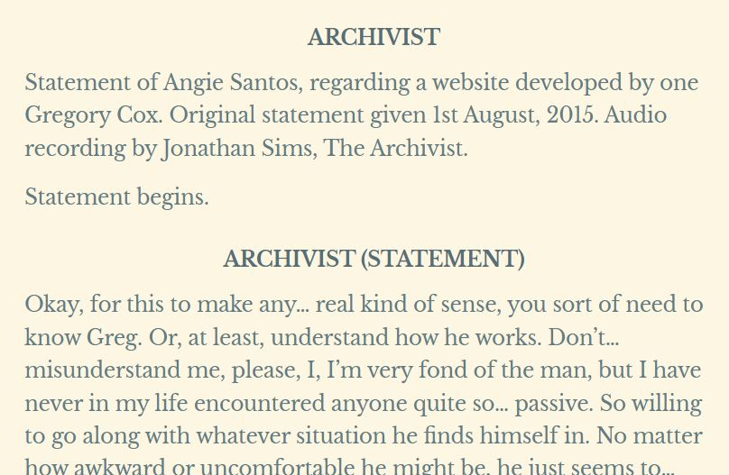

For this project, I will be comparing different seasons of a podcast called The
Magnus Archives (TMA) using Voyant Tool and AntConc. For a bit of context The Magnus
Archives is a horror podcast about what are seemingly indescribable horrors, the
central gimmick of the podcast is that it features "statements" by characters about
their experiences with these supernatural entities. As the podcast progresses it
becomes more plot-driven and focuses less on single-use statements, however they
remain present throughout the entire series. As such, I thought that it would be
interesting to analyze the series, season by season, to see what in total 672,146
total words were analyzed, with 20,377 different words in total. Two important things to note before beginning are that, a.) the transcriptions are done by multiple people with different styles, and as such the same actions are phrased differently from transcript to transcript, and b.) the main character and the main writer both have the same name (Jonathan Sims), if I am referring to the writer it will be denoted by an (RQ)
ANTCONC
Starting off by analyzing all 200 transcripts using 3-gram phrases we can get a
decent idea of the vibe of the podcast. Coming in strong with the phrase "i don t"
used 1437 times and "don t know" used 725 times, along with other phrases
communicating uncertainty, it becomes clear that this is a horror podcast
emphasizing the unknown.
Investigating further through viewing the ngrams in context we see a lot of I don't
know, think, want, or remember.
Looking at each season individually we see a lot of the same words reoccurring in
the top 15, however, their placements vary from season to season. I was surprised by
the lack of prominence of sound cue words, such as [tape clicks on] or
[click][click] Archivist, as those occur in almost every episode and yet only show
up in the top 15 3 times, and each time they do not place very high.
Season 1
Looking at the top 15 3-grams in season 1 we can see a lot of words related to
descriptions, or in some cases the lack thereof. In season 1, everything is foreign,
the head archivist knows nothing and does not believe any of the statements have any
true merit. To keep this veil of disbelief up it is important that the statements,
especially the earlier ones, have gaps and uncertainties. By looking at the phrases
"don't know" and "i didn't" we can see a difference in how they are used. "don't
know" is usually used to convey the unknown, whereas "i didn't" tends to convey
disbelief. A minor difference, but still worth noting.
Most of this season (and a large part of the next) is of the same structure, and as
such there is not a ton happening in the data besides offering a look into Jonathan
Sims(RQ) writing style.
Season 2
Season 2's structure is very similar to season 1's, with one addition, the Archivist
is now extremely paranoid and adds an extra "supplemental" recording onto the main
statements. There are also more non-statement character interactions in comparison
to season 1, but they are still relatively uncommon. This is relevant to the data as
the 3-gram "click click archivist" showed up in only this season's top 15.
KWIC view of the phrase "click click archivist"
Due to the formatting of the transcripts, all statements are in one document, so all
(almost) all episodes will start with "click click archivist." I suspect that this
phrase only appeared in season 2 due to the fact that the Archivist is still the
primary speaker and there are more breaks in the recordings. In season 1 there were
fewer breaks and from season 3 onwards the archivist is rarely the first person to
speak after a cut in the recording.
Season 3
Season 3 introduces a lot of changes to the podcast, new characters, new twists,
and most importantly: a new classification system for statements. In prior seasons
the statements were filed based on what seemed to be happening in them and/or
reoccurring people, however halfway through the third season the concept of 14 types
of fear, or powers, is introduced. These powers are all originally referred to as
"the _____," and as such I looked into the 2-grams starting with "the."
Unfortunately, this yielded far fewer results than I expected. The only fear that
was in the top fifteen was "the end," however this is in reference to the traditional
usage, not the podcast-exclusive usage. The primary fear focused on this season (the
Stranger) appears at #34, below multiple words that were linked to said fear, which
I found quite surprising.
Top 2-grams starting with "the."
It is, however, worth noting that the top 2-gram starts with "the door" Although this is a
normal phrase it did bring to my attention just how much this podcast loves to link
doors and horror. It makes sense, it is an object that prevents you from seeing what
is right ahead of you, but yet you choose to open. Within the podcast, there is an
avatar called "the Distortion," who primarily works by luring people into doorways,
and my first assumption was to assume that this 2-gram was referring to that, however
upon close inspection this turned out to be untrue.
KWIC view of the phrase "the door." It is worth noting that instance
#80 is in reference to the Distortion.
Season 4
Season 4 all but ditches the reliable convention of referring to the fears as "the
_____," which is good for podcast flow but unfortunately makes it much harder to
view through AntConc. A primary shift that occurs in this season is not in the
podcast but in the transcripts. A new transcriber has entered the world of
unofficial transcribing and they have a different approach. Looking at the 3-grams I
was surprised by the phrase "in the background" occurring 46 times (ranked #16
overall for the season). When I went to look at the word in context I realized that
it was due to sound cues throughout the season, this new transcriber phrases the
cues differently than the old transcribers, specifying if the tape clicks on or off,
or in this case, specifying whether a sound is or isn't in the background.
It is also worth noting that this transcriber is a lot less serious
than others when it comes to describing vocal tones.
Aside from that, this season shares many 3-gram conventions with the season
prior, which makes sense, as content-wise the seasons have quite a lot in
common.
Season 5
This season is the most unique by far, shifting away from the archiving desk job
setting our main character has accidentally triggered an apocalypse! Due to his
inhuman nature he still has to make statements to survive, but they are no
longer the focal point of the story. Despite this, the statements due tend to
take up at least two-thirds of the episodes that they appear in, so they do have
an impact on the n-grams. "I'm sorry" being the 6th most said 3-gram is
unsurprising, as by the final season most characters have a lot to apologize for
and there's no better time than the end of the world. This is also quite fitting
as the last line of the podcast is "I’m sorry, and… good luck." Due to the
prominence of the fear entities I decided to try searching up the phrase, "the
____" again and came up with more interesting results.
There are fear entities in here!
"The archivist" is the top 2-gram in this query (and the 14th most popular 2-gram
overall), which makes narrative sense as the people around him almost
exclusively call him by his title as opposed to his name. "The eye," the primary
entity throughout the podcast, is ranked #4, and by looking into KWIC view we
can see that it is the correct usage. "The end" suffers from the same pitfall it
felt in season 3, this time being partnered with the phrase "the end of the
world," as opposed to its in-universe exclusive meaning. I also inspected the usage of "the spider," as they are important later in the season, however almost all uses of the phrase came from one narration-heavy episode.

Voyant Tools
Due to the formatting of the podcast transcript, I have blacklisted character
names in Voyant, so as not to skew the data. One implication of this is that it
subtracts every instance of the words "archivist" and "daisy." It is also worth
noting that the archivist's real name is Jon, however unofficial transcribers
have fought over if it is spelled "Jon" or "John," and as such it is not
consistent in the transcripts whatsoever.
Transcript from TMA episode 091 "The Coming Storm."
First looking at all 200 transcripts we get a basic word cloud that shows
something similar, but not the same. There are still occurrences of words like
"don't, "didn't," and "know," however, we now have more words such as "like" and
"just." This makes sense, as these are words that are used more colloquially,
and as such wouldn't come up as frequently in 3-gram phrases.
An interesting trend that I noticed was the graph tracking the usage of the word
"statement" over time. At the beginning of the series every statement starts
with a declaration of intent, whereas later on, mostly in the final season,
statements are simply implied and not explicitly declared.

Example of statement with and without introduction.
The graph slowly decreases as time goes on, however, it is worth noting that the
various fluxations occur for three primary reasons. The first reason was
addressed above, as many statements later on are undeclared. However, until the
final season, statements continue to be declared a great majority of the time,
leaving two factors to impact the trajectory of the graph below. The first
factor is that as the story continues some episodes do not feature statements at
all, however, this is a rare event, hence "statement" remaining in the top words
throughout the series. The second factor is that throughout the story the
concept of a "statement" becomes more relevant to the plot, and as such
characters mention statements as a concept and not as a declaration more and
more throughout the story. These 3 factors combine to make a graph with a
downhill trend, but not entirely without uphill fluctuations.
By not excluding names we can see that Jonathan Sims (Archivist) (the archivist)
speaks the most at 5338 occurences, Martin follows at 3715, and Basira at 1451.
The links view offers us a good view of the connections and context in which these
characters occur. The Archivist lies at the center, as the main character
with the most connections, and Martin falls right next to him, however, his main
connections are with filler conversational words. Basira's context within these
words is mainly with her connection to the Archivist and Martin, not many of the
other words on the web. The Archivist has the most exclusive connections,
whereas Martin has only the word "I'm," whilst Basira's exclusive connection is
that of her detective partner Daisy.
Compared to Antconc, Voyant is able to give us a better timeline on what is happening, as specific words fluctuate more than phrases, however, in both, we can see a consistent writing style throughout. The reliable presence of the statements allows for similar words and phrases to be displayed from season to season, regardless of the other goings-on in the background. This is impressive, as the podcast spanned 5 years and Jonathan Sims kept a reliable style throughout the series.
![transcription screenshot showing one transcriber using [click]](images/tas/intro_ex1.png)
![transcription screenshot showing one transcriber using [tape clicks off]](images/tas/intro_ex2.JPG)